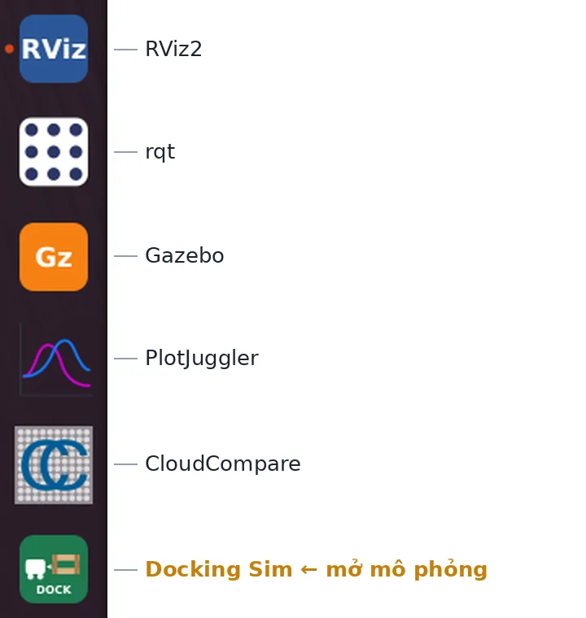

Phần 1
Kiến thức cần nắm
Phần này đi theo đúng đường dữ liệu: từ điểm ảnh của camera tới lệnh vận tốc gửi xuống bánh xe. Các hình có số liệu đều được tính bằng chính code lõi của dự án (camera3d_docking.core) trên cảnh tổng hợp có đáp án đúng, nên những gì bạn thấy là hành vi thật của chương trình.
1.1Hệ thống gồm những gì
Chương trình gồm hai node ROS 2. pose_estimator nhận đám mây điểm và trả ra pose của vật. docking_controller nhận pose đó và sinh lệnh cmd_vel. Nếu robot đã chạy Nav2, bạn có thể bỏ node thứ hai và để docking_server của Nav2 nhận pose thay.
detected_dock_pose trong frame odom; Nav2 (đường A) hoặc bộ điều khiển riêng (đường B) đều dùng được. Đường đứt nét là dữ liệu phụ để quan sát.Lõi thuật toán nằm trong core/ và không import ROS, nên test được bằng pytest mà không cần chạy robot. Các node trong ros/ chỉ là lớp vỏ mỏng: đọc message, tra TF, gọi lõi, phát kết quả.
1.2Đám mây điểm (PointCloud2)
Camera 3D (stereo, ToF hay structured light) đo khoảng cách cho từng pixel. Ghép khoảng cách với hướng tia của pixel ta được một điểm (x, y, z). Toàn bộ ảnh cho ra một đám mây điểm, gửi trong ROS bằng message sensor_msgs/PointCloud2.
base_link. Pallet nằm ở giữa, cách robot 1,6 m.Ba đặc điểm của dữ liệu cần nhớ khi đọc code:
- Organized cloud: điểm xếp theo lưới hàng × cột giống ảnh. Nhờ vậy node lấy mẫu thưa rất rẻ (
cloud_stride: 2giữ 1/4 số điểm) trước khi làm gì khác. - NaN: pixel không đo được vẫn có mặt trong message. Chương trình bỏ chúng ngay khi chuyển sang numpy.
- Nhiễu tăng theo bình phương khoảng cách với camera stereo (σ ≈ 1 mm + 2 mm·z² trong mô phỏng). Vì vậy pose được tinh chỉnh liên tục khi robot tiến lại gần.
1.3Hệ tọa độ và TF
Mọi con số trong chương trình đều gắn với một frame (hệ tọa độ). Theo chuẩn REP-103 của ROS: x hướng tới trước, y sang trái, z lên trên. Bốn frame quan trọng:
| Frame | Gắn với | Vai trò trong chương trình |
|---|---|---|
odom | sàn nhà (cố định cục bộ) | Pose vật được lọc và phát trong frame này, vì vật đứng yên trong odom. |
base_link | thân robot, đặt trên mặt sàn | Đám mây điểm được đổi về đây để cắt ROI và khớp template. |
| frame camera | camera (lấy từ header.frame_id) | Theo driver: frame quang học (z vào cảnh, x phải, y xuống) hoặc camera_link (x tới trước). Gazebo dùng loại thứ hai. |
| frame vật | template của vật | Gốc ở tâm mặt trước, trên sàn; +x hướng vào trong vật; +z lên. |
T_base_obj, tức pose của vật trong base_link. Node nhân thêm T_odom_base (từ odometry) để có pose vật trong odom; con số này đứng yên khi robot chạy.T_base_obj đưa một điểm từ frame vật sang frame robot: p_base = T_base_obj · p_obj. Bên trong ICP, chương trình giải phép ngược T_obj_base (đưa điểm cảnh về frame vật) rồi mới nghịch đảo. File hướng dẫn .md ban đầu đọc thẳng phần dịch chuyển của T_target_source, nên sai cả dấu lẫn giá trị mỗi khi vật bị xoay. Khi tự viết code, luôn ghi rõ “từ frame nào sang frame nào”.
Cách kiểm tra TF nhanh nhất: sau khi đổi cloud về base_link, các điểm sàn phải nằm ở z ≈ 0. Trong mô phỏng, session phát triển đã kiểm chứng điều này (sàn z = 0 ± 7 mm) và phát hiện cloud của Gazebo dùng trục x tới trước chứ không phải frame quang học.
1.4Một khung hình đi qua đâu
Mỗi khi có cloud mới (giới hạn 10 khung/giây), node làm chuỗi bước dưới đây. Nhánh trên (bám) chạy gần như mọi lúc. Nhánh dưới (tìm kiếm) chỉ chạy khi chưa có hoặc vừa mất pose.
core/estimator.py và ros/pose_estimator.py). Hàng trên là tiền xử lý, rẻ và chạy mọi khung. Ở chế độ bám, ICP bắt đầu từ pose mà Kalman dự đoán nên chỉ mất khoảng 10 ms. Kết quả không qua được cổng chất lượng thì không được phát; lý do được ghi vào ~/status.1.5Tiền xử lý: cân bằng sàn, ROI, voxel
Cân bằng sàn bằng RANSAC
Góc chúc của camera khai trong TF hiếm khi đúng tuyệt đối. Chỉ cần lệch 1°, mặt sàn ở xa 2 m đã cao hoặc thấp đi khoảng 3,5 cm, đủ làm hỏng phép khớp. Vì vậy node lấy các điểm gần sàn, dùng RANSAC tìm mặt phẳng sàn, rồi xoay nhẹ đám mây để sàn nằm đúng ở z = 0. RANSAC chọn ngẫu nhiên nhiều bộ 3 điểm, giữ mặt phẳng được nhiều điểm “đồng ý” nhất, nên vật trên sàn không làm lệch kết quả.
Cắt ROI, xóa sàn và gộp voxel
Sau khi cân bằng, node chỉ giữ các điểm trong một hộp phía trước robot (ROI, mặc định x 0,25–3,5 m, |y| ≤ 1,5 m, z 3 cm–2 m trên sàn). Ngưỡng z = 3 cm cũng chính là bước xóa sàn. Cuối cùng các điểm được gộp vào ô lưới 2 cm (voxel): mỗi ô chỉ còn một điểm là trọng tâm của các điểm trong ô. Mật độ điểm vì vậy đều nhau dù vật ở gần hay xa.
1.6Template của vật
Chương trình không “học” vật bằng mạng nơ-ron. Nó cần một template: tập điểm kèm pháp tuyến mô tả bề mặt nhìn thấy được của vật, đặt trong frame vật. Template được lưu thành file .npz; có thể xuất .pcd để mở bằng CloudCompare.
Có ba cách tạo template:
Từ mô hình hộp
Mô tả vật bằng các hộp chữ nhật (pallet, rack, dock chữ V), rồi chiếu tia từ 20 điểm nhìn ảo phía trước để giữ lại phần bề mặt thực sự thấy được. Thế giới Gazebo cũng sinh từ cùng các hộp này.
Từ file CAD
Đọc STL hoặc OBJ, lấy mẫu bề mặt theo diện tích, bỏ các mặt quay lưng với robot. Đủ dùng cho vật lồi; chưa tính phần bị che khuất.
Quét thực tế
Đặt robot ở vị trí đã biết so với vật, lưu vài cloud bằng cloud_saver, rồi gộp lại. Chính xác nhất vì mang đúng đặc tính nhiễu của camera thật.
templates/: euro_pallet.npz, rack.npz, v_dock.npz. Với trạm sạc, nên làm mặt dock hình chữ V: một tấm phẳng không cho biết robot lệch ngang bao nhiêu (xem mục 1.9).1.7Tìm kiếm toàn cục 2.5D
ICP (mục sau) chỉ hội tụ khi pose ban đầu đã gần đúng, trong khoảng ±7 cm và ±6°. Lần đầu nhìn thấy vật, hoặc khi mất dấu, ta chưa có pose nào. Bước tìm kiếm toàn cục quét mọi vị trí (x, y) và mọi góc yaw trong ROI để đưa ra vài ứng viên tốt. Thay vì dùng YOLO hay đặc trưng FPFH (nặng, cần GPU hoặc huấn luyện), chương trình dùng một phép tương quan 2.5D rẻ:
- Chia chiều cao của template thành 3 dải. Trong mỗi dải, chiếu điểm cảnh xuống lưới 2D ô 3 cm, được 3 “bản đồ chiếm chỗ”.
- Với mỗi góc yaw từ −45° đến +45° (bước 3°, tổng 31 góc), template cũng được chiếu thành 2 mặt nạ: P là các ô bề mặt, F là các ô phải trống, nằm trước bề mặt đầu tiên, ví dụ bên trong hốc càng.
- Điểm số = mức trùng giữa cảnh và P, trừ đi 0,5 × mức cảnh lấn vào F. Một bức tường phẳng lấp kín hốc càng nên bị phạt, không thể “giả làm” pallet.
- Phép trùng được tính cho mọi vị trí cùng lúc bằng FFT. Giữ 5 đỉnh tốt nhất, cách nhau ít nhất 15 cm hoặc 10°.
1.8ICP: khớp tinh template vào cảnh
ICP (Iterative Closest Point) lặp lại hai việc: (1) với mỗi điểm cảnh, tìm điểm template gần nhất; (2) tính phép dịch và xoay nhỏ làm các cặp điểm khớp nhau hơn. Phiên bản trong chương trình có thêm vài chi tiết để vừa chính xác vừa nhanh:
- Point-to-plane: đo khoảng cách theo pháp tuyến của template thay vì khoảng cách điểm–điểm. Mặt phẳng được phép “trượt” trên chính nó, nên hội tụ nhanh hơn nhiều.
- 4 bậc tự do (x, y, z, yaw): vật đứng trên sàn đã được cân bằng nên roll và pitch bị khóa. Ít ẩn hơn thì bền hơn.
- Ba tầng thô → tinh: khoảng ghép cặp tối đa 15 cm, rồi 6 cm, rồi 3 cm. Tầng đầu kéo template về gần, tầng cuối mới chỉnh từng milimét.
- Lưới tra cứu tính sẵn: mỗi ô 1 cm lưu sẵn chỉ số điểm template gần nhất, nên tìm láng giềng chỉ tốn O(1), nhanh hơn KD-tree 5–10 lần. Riêng tầng cuối dùng KD-tree chính xác.
- Trọng số Tukey: điểm lệch quá xa (nhiễu, vật lạ) được giảm trọng số về 0 thay vì kéo lệch kết quả.
1.9Cổng chất lượng: thà không trả lời còn hơn trả lời sai
Một pose sai mà không có cảnh báo có thể làm robot đâm vào vật. Vì vậy mọi kết quả ICP phải qua 6 tiêu chí trước khi được phát. Ngưỡng mặc định nằm trong config/estimator.yaml:
| Tiêu chí | Ý nghĩa | Ngưỡng | Không đạt → |
|---|---|---|---|
coverage | Tỷ lệ điểm template quay về camera (bỏ mặt nhìn quá xiên, > 75°) có điểm cảnh trong vòng 3 cm | ≥ 0,35 | LOW_QUALITY |
inlier_ratio | Tỷ lệ điểm cảnh quanh vật nằm sát bề mặt template (< 2 cm) | ≥ 0,5 | LOW_QUALITY |
rmse | Sai lệch trung bình theo pháp tuyến của các inlier | ≤ 1,5 cm | LOW_QUALITY |
observability | Dịch thử 3 cm sang ngang hoặc xoay thử 1,5°: chi phí có tăng rõ không? | ≥ 0,008 | DEGENERATE |
sigma_xy, sigma_yaw | Độ bất định ước lượng từ ICP (đã nhân hệ số 25 cho thận trọng) | ≤ 2 cm; ≤ 1,5° | LOW_QUALITY |
| Mơ hồ | Ứng viên tốt nhì ở chỗ khác (> 5 cm hoặc > 3°) có điểm ≥ 0,9 × tốt nhất | tỷ số < 0,9 | AMBIGUOUS |
OK pose đạt mọi tiêu chí, đã phát. BLIND_HOLD robot đã vào vùng mù, đang phát pose giữ từ Kalman. NO_POINTS ROI có dưới 50 điểm. NOT_FOUND tìm kiếm không có ứng viên nào. LOW_QUALITY, DEGENERATE, AMBIGUOUS như bảng trên.
Thử nghiệm làm sau khi sổ tay ra đời (benchmark --seg-study, 40 tư thế mỗi cảnh, pallet cách 1,0–2,5 m) cho thấy bản hiện tại, chỉ dùng hình học, chưa chịu được vật lạ nằm sát vật: điểm của tường hoặc hàng hóa bị khớp nhầm, và có lúc vẫn báo OK với pose sai. Ở cảnh sạch thì 40/40 OK, không lần nào sai.
| Cảnh | Báo OK | Trong đó sai (> 2 cm hoặc > 2°) |
|---|---|---|
| Tường sát sau pallet (5 cm) | 22/40 | 8 |
| Pallet có hàng chồng, nhô ra 2 cm | 8/40 | 8 |
| Giữa dãy hàng (khe 5 cm) + tường | 1/40 | 1 |
Cho tới khi thuật toán được sửa: dọn trống quanh chỗ dock. Nếu vật lạ chỉ nằm phía trên hoặc phía sau vật, hạ roi.max z xuống ngay trên vật (pallet: 0,20); đừng dùng cách này khi có hàng sát hai bên, vì lúc đó nhận sai còn nhiều hơn. Luôn nghiệm thu theo B6 và B8 tại chỗ dock thật. Nhánh feat/segmentation-mask (chưa gộp vào main) thử thêm mặt nạ segmentation: với mặt nạ đúng từng pixel thì cả ba cảnh trên đều 40/40, không sai; số liệu đầy đủ nằm trong README của nhánh đó.
1.10Bộ lọc Kalman và vùng mù
Khi robot tới rất gần, camera không còn thấy vật: vật nằm dưới tầm đo tối thiểu hoặc ra khỏi khung hình. Bài báo của Aghili (2022) xử lý tình huống tương tự bằng bộ lọc Kalman. Chương trình dùng ý tưởng đó với giả định đơn giản: vật đứng yên trong frame odom.
- Mỗi phép đo hợp lệ (x, y, yaw của vật trong
odom) cập nhật bộ lọc; nhiễu càng nhỏ thì càng được tin. - Cổng Mahalanobis (χ² = 14,16): phép đo lệch quá xa so với dự đoán bị loại. Nếu 5 phép đo liên tiếp bị loại nhưng nhất quán với nhau, bộ lọc khởi tạo lại (sửa trường hợp khóa sai lúc đầu).
- Giữ pose (hold): khi mất dấu dưới 2 s, hoặc khi robot cách vật dưới 0,6 m, node vẫn phát pose Kalman 10 lần/giây. Bộ điều khiển nhờ vậy không báo “mất phát hiện” ở đoạn cuối.
DockingFSM và StaticPoseKF thật, với 3 sự cố. Ở giây thứ 2 có một khung nhận nhầm, lệch 32 cm; cổng Mahalanobis loại nó và pose không nhảy. Từ 3,0 đến 4,2 s camera bị che; pose vẫn được giữ. Từ 11,5 s robot vào vùng mù; dải ±2σ nở dần (mô hình cho phép odometry trôi 5 mm/√s), nhưng pose vẫn ở đúng chỗ cho tới khi dock xong.1.11Luật điều khiển và máy trạng thái
Bộ điều khiển riêng (docking_controller) dùng luật điều khiển mượt của Park & Kuipers (2011). Nav2 cũng dùng luật này trong graceful_controller, với cùng tham số mặc định. Ý tưởng: từ vị trí đích (x, y) và hướng đích ψ trong frame robot, tính độ cong κ của quỹ đạo sao cho robot vừa tới đích vừa quay đúng hướng ở đoạn cuối.
α = atan2(y, x) là góc tới đích, φ = ψ − α, δ = −α, r là khoảng cách. Độ cong κ = −(1/r)·[k_δ(δ − atan(−k_φ·φ)) + (1 + k_φ/(1 + (k_φφ)²))·sin δ]. Tốc độ v = v_max / (1 + β|κ|^λ), tự giảm khi cua gắt hoặc khi còn dưới 0,25 m; ω = κ·v. Mặc định k_φ = 3, k_δ = 2, β = 0,4, λ = 2.Đích của robot không phải chính frame vật, mà là frame vật dịch đi một đoạn: T_odom_target = T_odom_vật · T(dock_offset_x, dock_offset_y). Mặc định dock_offset_x = −0,35: base_link dừng trước mặt vật 0,35 m. Với xe nâng có càng đi vào pallet thì offset dương. Nếu xe lùi vào (càng ở phía sau), đặt backward: true.
DockingFSM thật với tham số trong config/controller.yaml trên mô hình xe hai bánh lý tưởng. A: từ 5 điểm xuất phát (lệch ±0,3 m, ±20°), mọi quỹ đạo nắn thẳng trước khi vào vùng mù (cam). B: lệnh vận tốc cho một lần chạy. v thấp lúc đầu vì phải cua gắt, đạt 0,2 m/s, bị kẹp còn 0,08 m/s trong vùng mù, rồi giảm dần và dừng khi còn dưới 1 cm. Cả 5 lần đều DOCKED sau 13,5–15,9 s.Bao quanh luật điều khiển là một máy trạng thái (FSM) quyết định khi nào chạy, khi nào dừng, khi nào thử lại:
core/control.py. Ở BLIND, robot đi theo pose do Kalman giữ, tốc độ tối đa 0,08 m/s, và không còn đòi phép đo mới. DOCKED khi quãng còn lại dọc trục dock dưới 1 cm, hoặc khi topic ~/contact báo đã chạm. Trạng thái hiện tại được phát trên ~/state.1.12Hai cách tích hợp: có Nav2 hoặc không
Estimator chỉ phát pose, không quan tâm ai dùng nó. Bạn chọn một trong hai đường:
config/nav2_docking.yaml dùng plugin opennav_docking::SimpleNonChargingDock với use_external_detection_pose: true và tắt bộ lọc của Nav2 (filter_coef: 0.0), vì pose đã được lọc Kalman. Đường B dành cho robot tự viết hoặc điều khiển từ RCS/FMS: chỉ cần gọi một service.1.13Hiệu năng
Mục tiêu thiết kế là chạy được trên CPU cỡ Raspberry Pi 5, không GPU, chỉ dùng numpy và scipy cài từ apt. Đo trên cảnh của mục 1.2 với tham số mặc định:
ros2 run camera3d_docking benchmark để đo lại.Benchmark tích hợp sẵn (tools/benchmark.py) chạy 40 tình huống: pallet ở 1,0–2,5 m, yaw ±30°, có nhiễu stereo. Kết quả trên máy dev: 40/40 OK, sai số vị trí trung vị 1,1 mm (phân vị 95: 3,7 mm), sai số yaw trung vị 0,04° (phân vị 95: 0,15°). Mục tiêu của thiết kế là trung vị ≤ 1 cm / 0,5°.
Phần 2
Cách sử dụng chương trình
Phần này đi từ máy dev tới robot thật: nạp môi trường, kiểm tra, tạo template, chạy node, đọc trạng thái và ra lệnh docking. Mọi lệnh chạy từ thư mục gốc dự án sau khi source env.sh. Checklist đưa lên robot thật (B1–B10, có tiêu chí nghiệm thu) nằm trong docs/HUONG_DAN_TRIEN_KHAI.md; các mục dưới đây giải thích những bước đó bằng hình.
2.1Thư mục dự án
Ba thư mục bạn sẽ mở nhiều nhất là config/ (tham số), launch/ (lệnh khởi chạy) và templates/ (mẫu vật).
Docking using Camera 3D/ ├── env.sh # luôn source file này trước khi làm việc ├── README.md ├── docs/HUONG_DAN_TRIEN_KHAI.md # checklist B1–B10 cho robot thật ├── docs/superpowers/ # spec thiết kế + kế hoạch triển khai ├── tools/ # cài ROS 2 Jazzy, ghim ứng dụng lên taskbar ├── logs/ # log của test E2E └── ros2_ws/src/ ├── camera3d_docking/ │ ├── camera3d_docking/core/ # thuật toán, chỉ numpy + scipy │ ├── camera3d_docking/ros/ # node pose_estimator, docking_controller, cloud_saver │ ├── camera3d_docking/tools/ # make_template, benchmark │ ├── config/ # estimator.yaml · controller.yaml · nav2_docking.yaml │ ├── launch/ # estimator · docking · nav2_docking (.launch.py) │ ├── templates/ # euro_pallet.npz · rack.npz · v_dock.npz │ ├── rviz/docking.rviz │ └── test/ # 102 test (pytest) └── camera3d_docking_sim/ ├── worlds/ · models/docking_bot/ · config/bridge.yaml ├── launch/sim.launch.py └── scripts/run_e2e.sh
references/ chứa 6 repo tham khảo, chỉ để đọc.2.2Build và nạp môi trường
Nạp môi trường mỗi khi mở terminal mới. File này source ROS 2 Jazzy, source workspace đã build và đặt
PYTHONNOUSERSITE=1.cd ~/Desktop/"Docking using Camera 3D" && source env.sh
Build lần đầu, hoặc khi thêm file mới (launch, config, template). Sửa code Python thì không cần build lại, nhờ
--symlink-install.cd ros2_ws && colcon build --symlink-install && source install/setup.bash
$ source env.sh
[docking3d] ROS 2 jazzy + workspace đã nạp (PYTHONNOUSERSITE=1)ros2 run camera3d_docking … sẽ báo không tìm thấy gói.Máy dev có numpy 2.x cài bằng pip trong ~/.local. Bản này xung đột với scipy cài từ apt mà ROS 2 Jazzy dùng (lỗi kiểu dtype size changed). Biến môi trường này bảo Python bỏ qua ~/.local. Các node của dự án tự đặt biến này nếu bạn quên, còn các công cụ khác như rqt thì không.
Session phát triển cũng đã ghim sẵn 6 ứng dụng lên taskbar của Ubuntu, gồm cả nút mở mô phỏng:

2.3Chạy test và benchmark
Hai lệnh dưới đây là cách nhanh nhất để biết cài đặt có đúng không, trên máy dev cũng như trên robot:
cd ros2_ws/src/camera3d_docking && python3 -m pytest -q
ros2 run camera3d_docking benchmark --quick
$ python3 -m pytest -q ........................................................................ [ 70%] .............................. [100%] real 0m29s (102 dấu chấm = 102 test đạt) $ ros2 run camera3d_docking benchmark --quick Khởi tạo template (19678 điểm) + estimator: 0.91 s x y yaw | trạng thái Δpos(cm) Δyaw(°) | tìm(ms) bám(ms) 1.20 0.00 -20 | OK 0.08 0.02 | 152.6 12.1 1.20 0.00 0 | OK 0.07 0.03 | 80.0 13.2 1.20 0.00 20 | OK 0.06 0.00 | 68.7 11.9 2.00 0.00 -20 | OK 0.24 0.02 | 105.0 11.6 2.00 0.00 0 | OK 0.13 0.03 | 96.1 10.3 2.00 0.00 20 | OK 0.19 0.01 | 113.8 11.0 ---------------------------------------------------------------- Thành công: 6/6 Sai số vị trí : trung vị 0.11 cm, P95 0.23 cm Sai số hướng : trung vị 0.02°, P95 0.03° Thời gian : tìm kiếm TB 102.7 ms, bám TB 11.7 ms / khung
--quick để chạy đủ 40 tình huống. Trên robot thật, cột bám(ms) nên dưới 50 ms.2.4Tạo template cho vật
Ba template có sẵn dùng được ngay nếu vật thật đúng kích thước chuẩn. Khi vật khác đi, tạo template mới bằng make_template:
| Trường hợp | Lệnh (sau ros2 run camera3d_docking) |
|---|---|
| Pallet khối, đo kích thước thật | make_template pallet --depth 1.2 --width 0.8 --block-widths 0.10 0.145 0.10 -o pallet_kho_A.npz |
| Kệ một khoang | make_template rack --bay-width 1.0 --depth 0.9 --beam-levels 0.15 1.2 -o rack_A.npz |
| Trạm sạc rãnh chữ V | make_template vdock --opening 0.5 --depth 0.2 --height 0.25 -o vdock.npz |
| Từ file CAD (mặt trước quay về −x) | make_template from-mesh vat.stl --scale 0.001 -o vat.npz (scale 0.001 khi CAD tính bằng mm) |
| Xuất để xem bằng CloudCompare | make_template export-pcd vat.npz vat.pcd |
Quét thực tế cho template chính xác nhất, vì nó mang đúng đặc tính nhiễu của camera thật. Lệnh from-cloud gộp nhiều cloud chụp từ cùng một vị trí robot, nên bạn chỉ cần đo một pose:
ros2 run camera3d_docking cloud_saver --ros-args -r points:=<topic cloud> -p count:=5 -p output_dir:=scan1
ros2 run camera3d_docking make_template from-cloud scan1/*.pcd --object-pose 1.20 0.02 1.5 --camera-pos 0.25 0 0.30 -o vat.npz
--object-pose là pose của gốc frame vật (tâm mặt trước, trên sàn) trong base_link, đo bằng thước hoặc AprilTag. Sai số đo pose sẽ đi thẳng vào template, nên đo cẩn thận. Kiểm tra cuối cùng: trong RViz, đám điểm xanh ~/aligned_template phải phủ khít lên cloud thật.2.5Chạy với camera thật
Trên robot thật cần 4 thứ chạy cùng lúc. Mở 4 terminal (đã source env.sh) theo thứ tự:
ros2 launch realsense2_camera rs_launch.py \ depth_module.depth_profile:=424x240x15 \ pointcloud.enable:=true \ pointcloud.ordered_pc:=true
ros2 run tf2_ros static_transform_publisher \ --x 0.25 --y 0 --z 0.30 --pitch 0.1745 \ --frame-id base_link \ --child-frame-id camera_link
ros2 launch camera3d_docking docking.launch.py \ points_topic:=/camera/camera/depth/color/points
rviz2 -d ros2_ws/src/camera3d_docking/rviz/docking.rviz
ros2 launch <gói> <file> --show-args. T2: số đo thật của camera trên robot của bạn (vị trí và góc chúc, đơn vị m và rad). T3: chỉ cần estimator thì dùng estimator.launch.py. T4: file RViz mặc định đọc topic /camera/points; với camera thật, đổi topic của mục “Camera cloud” cho đúng.Khi mọi thứ chạy, sơ đồ node trông như dưới đây. Ảnh chụp từ rqt_graph trong mô phỏng; trên robot thật, vị trí của ros_gz_bridge là driver camera (phát cloud) và đế robot (nhận cmd_vel):
rqt_graph (chế độ Nodes/Topics, ẩn tf): cloud vào pose_estimator, pose ra /detected_dock_pose, docking_controller biến pose thành /cmd_vel. Ô chữ nhật là topic, ô bầu dục là node.2.6Đọc trạng thái của estimator
Mọi thứ estimator biết đều nằm trong topic /pose_estimator/status, dạng JSON, mỗi khung một bản. Xem bằng:
ros2 topic echo --field data /pose_estimator/status
{
① "status": "OK", "message": "",
② "mode": "track", "accepted": true,
③ "n_points": 394,
④ "quality": {
"coverage": 0.7032, "inlier_ratio": 0.9924,
"rmse": 0.0052, "sigma_xy": 0.0035,
"sigma_yaw_deg": 0.3489,
"observability": 0.0285,
"score": 0.6978, "iterations": 8.0 },
⑤ "timings_ms": {
"preprocess": 3.4, "icp": 5.8, "total": 9.3 },
⑥ "floor": { "valid": true,
"tilt_deg": 0.0075, "dz": 0.00002 },
⑦ "kalman": { "x": 1.9258, "y": 0.1539,
"yaw_deg": 14.97, "sigma_xy": 0.0036 }
}① Trạng thái; khi khác OK, message ghi lý do bằng tiếng Việt.
② track = bám từ pose dự đoán, search = vừa tìm kiếm toàn cục. accepted = Kalman đã nhận phép đo.
③ Số điểm trong ROI sau voxel. Dưới 50 là NO_POINTS.
④ Các chỉ số của cổng chất lượng (mục 1.9). Ở đây đều đạt xa ngưỡng.
⑤ Thời gian từng khâu của khung này (ms).
⑥ Cân bằng sàn: độ nghiêng sàn ước lượng. tilt_deg > 1° nghĩa là TF camera khai sai pitch/roll.
⑦ Pose vật trong odom sau Kalman (m, độ) và độ bất định. Ở đây sai so với vị trí thật dưới 1 mm và 0,03°.
~/status chụp từ mô phỏng khi robot đang tiến vào pallet. Cách nhanh để vẽ đồ thị các trường này theo thời gian là mở PlotJuggler (có trên taskbar) và kéo topic /pose_estimator/status vào.2.7Docking không cần Nav2
Khởi chạy estimator và controller (đưa robot tới trước vật trước, cách 1–2 m):
ros2 launch camera3d_docking docking.launch.py points_topic:=<topic cloud> cmd_vel_topic:=/cmd_vel
Ra lệnh docking, rồi theo dõi trạng thái ở terminal khác:
ros2 service call /docking_controller/start std_srvs/srv/Trigger
ros2 topic echo /docking_controller/state
Dừng giữa chừng nếu cần (robot dừng ngay, về
IDLE):ros2 service call /docking_controller/cancel std_srvs/srv/Trigger
$ ros2 service call /docking_controller/start std_srvs/srv/Trigger std_srvs.srv.Trigger_Response(success=True, message='Bắt đầu docking') # log của node docking_controller: [docking_controller]: [WAIT_DETECTION -> APPROACH] Đang tiếp cận [docking_controller]: [APPROACH -> BLIND] Vào vùng mù — bám theo pose giữ trong odom [docking_controller]: [BLIND -> DOCKED] Đã dock (còn 0.9 cm) $ ros2 topic echo --once /docking_controller/state data: 'DOCKED: Đã dock (còn 0.9 cm)'
start. Hệ thống RCS/FMS của bạn chỉ cần gọi 2 service và đọc topic ~/state như trên.Chương trình không tránh vật cản. Trên robot thật luôn cần thêm nút dừng khẩn, laser an toàn hoặc collision monitor, giới hạn tốc độ. Nên có cảm biến tiếp xúc phát lên /docking_controller/contact (std_msgs/Bool): khi chạm, robot dừng và báo DOCKED ngay.
2.8Docking với Nav2
Khi robot đã có Nav2, để docking_server của Nav2 lo cả hai pha. Bạn khai báo vị trí gần đúng của dock trên bản đồ trong config/nav2_docking.yaml, rồi gửi action:
ros2 launch camera3d_docking nav2_docking.launch.py points_topic:=<topic cloud>
ros2 action send_goal /dock_robot opennav_docking_msgs/action/DockRobot "{use_dock_id: true, dock_id: pallet_1}"nav2_docking.yaml. docks.pallet_1.pose là vị trí gần đúng của mặt vật trên bản đồ (sai vài chục cm vẫn được). Nav2 đưa robot tới staging pose cách mặt vật 1,6 m, tức 1,25 m trước điểm dừng; trong mô phỏng, quãng tiếp cận 1,25 m cho yaw cuối 0,93° so với 1,77° khi chỉ có 0,95 m. Từ đó plugin SimpleNonChargingDock đọc detected_dock_pose và lái robot tới điểm dừng cách mặt vật 0,35 m.Đường B (bộ điều khiển riêng) đã chạy end-to-end trong Gazebo. Đường A (Nav2) mới được kiểm tra tên tham số với thư viện opennav_docking đã cài; chưa chạy end-to-end vì cần bản đồ và hệ định vị. Khi tích hợp, hãy thử trong mô phỏng hoặc ở tốc độ thấp trước.
2.9Tham số hay chỉnh
Phần lớn tham số giữ mặc định là đủ. Những tham số dưới đây gắn với robot và vật cụ thể của bạn:
| Tham số (file) | Mặc định | Khi nào chỉnh |
|---|---|---|
template_path (estimator) | euro_pallet.npz | Đổi loại vật; tên file trong templates/ hoặc đường dẫn tuyệt đối. |
roi.min, roi.max (estimator) | [0.25, −1.5, 0.03] → [3.5, 1.5, 2.0] | Thu hẹp khi có vật giống nhau đứng cạnh (AMBIGUOUS), hoặc để giảm CPU. |
use_expected_pose, expected_pose | false, [1.2, 0, 0] | Bật khi biết trước vật nằm đâu so với robot (ví dụ đã đứng ở staging): khởi tạo nhanh, ít nhầm. |
cloud_stride, voxel_size | 2; 0.02 m | Tăng lên 3; 0.025 khi CPU yếu (B10). |
min_points_per_voxel | 1 | Đặt 2–3 để lọc “flying pixels” của camera stereo. |
dock_offset_x (controller) | −0.35 m | Vị trí dừng của base_link so với mặt vật: −(khoảng base_link tới mũi xe + khe hở). Dương nếu càng nâng đi vào pallet. |
backward (controller) | false | true khi lùi vào (xe nâng có càng và camera phía sau). |
law.v_max (controller) | 0.2 m/s | Robot thật: bắt đầu với 0.1 m/s. |
fsm.blind_zone, blind_zone_distance | 0.6 m; 0.6 m | Ít nhất bằng tầm gần nhất của camera + 0,2 m. |
slowdown_radius; robot dừng khi còn dưới 1 cm (goal_tol_x).2.10Xử lý sự cố
Khi robot không dock được, bắt đầu từ trường status trong /pose_estimator/status:
docs/HUONG_DAN_TRIEN_KHAI.md.| Hiện tượng khác | Nguyên nhân | Cách xử lý |
|---|---|---|
| Cảnh báo “Chưa tra được TF — bỏ khung” | Chưa có odom/TF, hoặc lệch đồng hồ | Kiểm tra nguồn TF odom→base_link; trong mô phỏng phải có use_sim_time:=true. |
| Lỗi numpy/scipy “dtype size changed” | numpy 2.x trong ~/.local | source env.sh trước khi chạy. |
| Robot lắc qua lại khi tiến vào | Luật điều khiển quá gắt so với đế robot | Giảm law.k_phi, law.k_delta, law.v_max; kiểm tra fsm.acc_v, fsm.acc_w. |
Báo OK nhưng robot vào lệch hẳn hoặc lệch hướng | Vật lạ sát vật (tường ngay sau, hàng chồng, hàng sát bên) bị khớp nhầm | Dọn trống quanh chỗ dock; xem khung “Giới hạn đã biết” ở mục 1.9. |
BLIND_HOLD xuất hiện | Bình thường khi robot đã rất gần vật | Không cần làm gì. |
Phần 3
Cách xem mô phỏng
Mô phỏng cho phép thử toàn bộ chuỗi camera → pose → điều khiển trước khi đụng tới robot thật. Mọi ảnh và video trong phần này được chụp từ mô phỏng chạy thật trên máy dev sáng 17/11/2026, với robot xuất phát lệch ngang 0,35 m và lệch hướng −15°.
3.1Mô phỏng gồm những gì
sim.launch.py. Gazebo tạo dữ liệu giống robot thật: cloud từ camera, odometry, TF. ros_gz_bridge chuyển chúng sang ROS 2. Phía ROS 2 chạy đúng các node sẽ chạy trên robot thật. Vì thế giới Gazebo sinh từ cùng mô hình hộp với template, mọi sai số đo được là sai số của thuật toán, không phải do mô hình lệch.3.2Khởi chạy
Có hai cách. Cách nhanh nhất là bấm nút Docking Sim trên taskbar (mục 2.2). Hoặc gõ lệnh sau khi source env.sh:
ros2 launch camera3d_docking_sim sim.launch.py
Sau vài giây, hai cửa sổ hiện ra: Gazebo (thế giới mô phỏng) và RViz (những gì robot “nhìn thấy” và hiểu). Lần chạy dùng cho các ảnh dưới đây có thêm tham số vị trí xuất phát:
ros2 launch camera3d_docking_sim sim.launch.py x:=1.1 y:=0.35 yaw:=-15
| Tham số launch | Mặc định | Ý nghĩa |
|---|---|---|
x, y, yaw | 1.0, 0.0, 0.0 | Vị trí xuất phát của robot trong world (m, m, độ). Mặt trước pallet ở x = 3,0 m. |
headless | false | true: không mở cửa sổ Gazebo, chạy nhanh hơn (dùng cho test tự động). |
rviz | true | false: không mở RViz. |
docking | true | false: chỉ chạy thế giới + bridge, bạn tự chạy estimator/controller. |
template | euro_pallet.npz | Template estimator dùng. |
3.3Xem trong Gazebo
docking_bot · 2 camera RGB-D (cao 0,30 m, chúc 10°) · 3 pallet EUR, mặt trước ở x = 3,0 m · 4 rack · 5 tường · 6 thùng gây nhiễu · 7 chạy/dừng, chạy từng bước, đặt lại · 8 Entity Tree: danh sách vật trong thế giới · 9 RTF: tốc độ mô phỏng so với thời gian thực (100 % là bằng) · 10 thanh công cụ thêm hình khối, di chuyển, xoay, chụp ảnh.| Thao tác trong khung 3D của Gazebo | Tác dụng |
|---|---|
| Giữ chuột trái + kéo | Dịch khung nhìn |
| Giữ chuột giữa + kéo, hoặc Shift + chuột trái + kéo | Xoay quanh điểm đang nhìn |
| Lăn chuột, hoặc giữ chuột phải + kéo | Phóng to / thu nhỏ |
| Nút ▮▮ ở góc dưới trái | Tạm dừng thế giới để quan sát kỹ (robot và đồng hồ mô phỏng cùng dừng) |
3.4Xem trong RViz
Gazebo cho thấy thế giới “thật”. RViz cho thấy robot hiểu thế giới đó thế nào: dữ liệu camera, template đã khớp và pose phát ra. Khi đánh giá thuật toán, cửa sổ này quan trọng hơn.
rviz/docking.rviz (đã kéo gần cho dễ nhìn). 1 Displays: bật/tắt từng lớp · 2 Camera cloud: điểm từ /camera/points, màu theo độ cao (đỏ thấp, vàng–xanh cao) · 3 Aligned template: template đã khớp, màu xanh lá. Phủ khít lên pallet nghĩa là estimator đang đúng · 4 Detected dock pose: trục tọa độ tại tâm mặt trước pallet · 5 TF base_link (robot) · 6 TF camera_link · 7 Views: chỉnh tiêu điểm và khoảng cách nhìn.| Thao tác trong khung 3D của RViz | Tác dụng |
|---|---|
| Giữ chuột trái + kéo | Xoay quanh tiêu điểm |
| Giữ chuột giữa + kéo, hoặc Shift + chuột trái + kéo | Dịch tiêu điểm (di chuyển X/Y) |
| Lăn chuột, hoặc giữ chuột phải + kéo | Phóng to / thu nhỏ |
| Bỏ tích một mục trong Displays | Ẩn lớp đó, ví dụ ẩn Camera cloud để chỉ nhìn template |
Khi robot rất gần pallet (vùng mù), camera gần như chỉ còn thấy sàn và mép pallet, nhưng trục “Detected dock pose” vẫn đứng yên đúng chỗ: đó là pose do Kalman giữ (trạng thái BLIND_HOLD, mục 1.10).
3.5Ra lệnh docking và theo dõi
Mở một terminal mới (source env.sh) và gọi:
ros2 service call /docking_controller/start std_srvs/srv/Trigger
Robot sẽ cua về trục của pallet, giảm tốc khi còn 0,6 m tới điểm dừng, rồi dừng trước mặt pallet 0,35 m. Video quay lại đúng lần chạy đó (Gazebo bên trái, RViz bên phải, thời gian thực):
base_link với camera_link) tiến dần tới pallet, trong khi template xanh lá đứng yên vì vật đứng yên trong odom.start. Ở khung BLIND (9,8 s), camera đã rất gần nên cloud của pallet chuyển sang màu vàng (điểm cao, gần camera); robot vẫn đi tiếp theo pose được giữ.Đồng thời, một script nhỏ ghi lại pose thật của robot (từ Gazebo), trạng thái controller và estimator. Kết quả:
goal_tol_x), ngang +0,1 cm, yaw +0,22°. Dải dưới cùng cho thấy estimator đo mới (OK, 74 khung) tới khi robot cách mặt pallet 0,6 m, sau đó giữ pose (BLIND_HOLD, 40 khung).Pose của pallet trong odom mà estimator báo đã dịch đi 1,5 cm và 1,2° trong lúc robot chạy, vì odometry bánh xe trong Gazebo bị trượt khi cua. Robot vẫn dừng đúng chỗ (sai 0,1 cm) vì phép đo của camera là tương đối giữa robot và vật: odometry trôi thế nào thì pose vật trong odom trôi theo đúng như vậy.
3.6Test tự động E2E
Thay vì bấm tay, script E2E tự khởi chạy mô phỏng không giao diện cho từng điểm xuất phát, gọi start, chờ DOCKED hoặc FAILED, rồi so pose thật của robot với đích:
bash ros2_ws/src/camera3d_docking_sim/scripts/run_e2e.sh
[docking3d] ROS 2 jazzy + workspace đã nạp (PYTHONNOUSERSITE=1)
[1/3] xuất phát (x=1.6, y=0.0, yaw=0.0°) ... log: …/logs/e2e_case0.log
-> DOCKED: dọc=-1.1 cm, ngang=+0.0 cm, yaw=-0.05° (16 s) PASS
[2/3] xuất phát (x=1.5, y=0.25, yaw=15.0°) ... log: …/logs/e2e_case1.log
-> DOCKED: dọc=-1.1 cm, ngang=+0.2 cm, yaw=+0.82° (19 s) PASS
[3/3] xuất phát (x=1.7, y=-0.3, yaw=-20.0°) ... log: …/logs/e2e_case2.log
-> DOCKED: dọc=-1.1 cm, ngang=-0.3 cm, yaw=-1.77° (21 s) PASS
KẾT QUẢ: 3/3 PASS (ngưỡng ngang ≤ 2 cm, yaw ≤ 2.0°, dọc ≤ 3 cm)ROS_DOMAIN_ID riêng nên không lẫn với mô phỏng khác đang mở.staging_x_offset của Nav2 được đặt −1,6 m.Tự chọn điểm xuất phát (x, y, yaw trong world, cách nhau bởi dấu phẩy):
bash ros2_ws/src/camera3d_docking_sim/scripts/run_e2e.sh --starts "1.6,0,0" "1.4,-0.3,-20"
3.7Thử thêm kịch bản
Đổi điểm xuất phát
Lệch nhiều hơn để xem luật điều khiển cua thế nào. Nên giữ pallet nằm trong tầm nhìn 87° của camera.
ros2 launch camera3d_docking_sim sim.launch.py x:=1.2 y:=-0.3 yaw:=-20
Tự chạy node
Chỉ mở thế giới, rồi chạy estimator/controller ở terminal khác để đổi tham số dễ hơn.
ros2 launch camera3d_docking_sim sim.launch.py docking:=false
ros2 launch camera3d_docking docking.launch.py points_topic:=/camera/points use_sim_time:=true
Chạy không giao diện
Nhẹ máy hơn; xem kết quả qua topic thay vì cửa sổ.
ros2 launch camera3d_docking_sim sim.launch.py headless:=true rviz:=false
Quan sát bằng số
Mở PlotJuggler từ taskbar, kéo /cmd_vel và /pose_estimator/status vào để vẽ đồ thị trong lúc docking.
Nhấn Ctrl+C ở terminal đã chạy ros2 launch. Nếu sau đó còn cửa sổ Gazebo treo, kiểm tra bằng ps -eo pid,args | grep "[g]z sim" rồi tắt các tiến trình đó.
Sổ tay viết cho dự án “Docking using Camera 3D”, ngày 17/11/2026. Hình có số liệu được sinh bằng chính code của gói camera3d_docking; ảnh chụp màn hình lấy từ mô phỏng Gazebo chạy trên máy dev. Script tạo lại hình nằm trong docs/huong-dan/scripts/ (xem README ở đó).